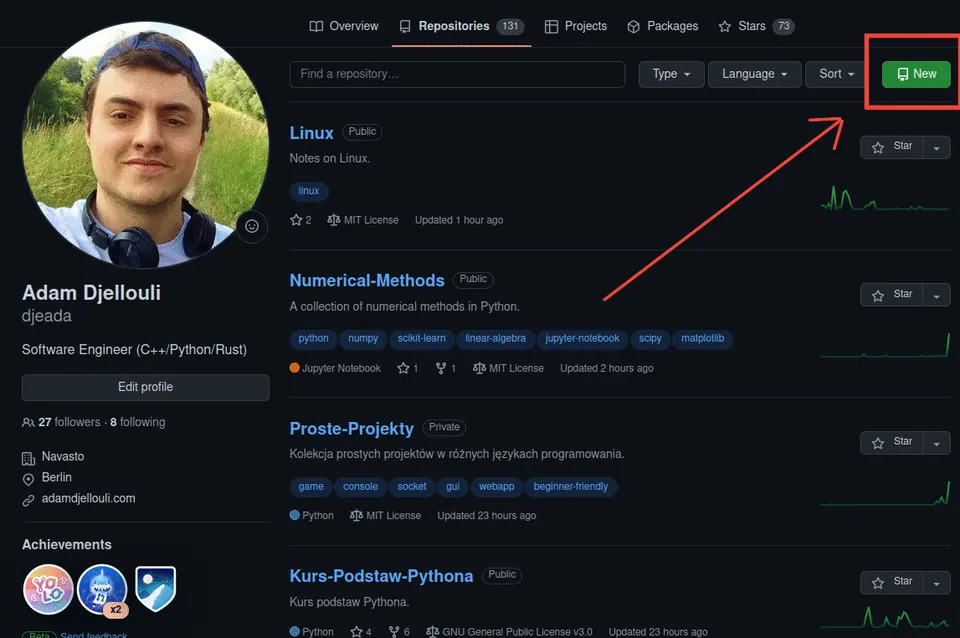
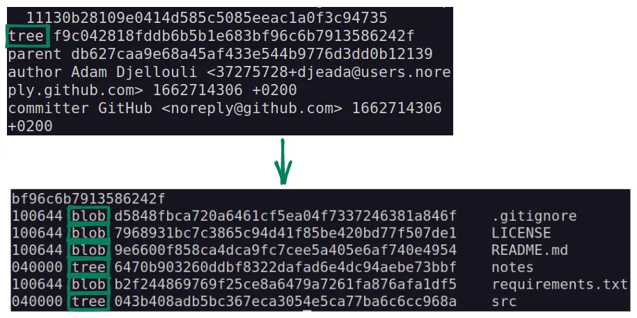

Aby zainstalować Git, należy pobrać instalator z oficjalnej strony https://git-scm.com/downloads i przejść przez proces instalacji. W systemie Linux dla wersji opartych na Debianie, można użyć polecenia:
sudo apt install gitPytanie: Czy muszę korzystać z GitHuba, aby korzystać z Gita?
Odpowiedź: Nie, istnieją inne rozwiązania do hostowania repozytoriów Git, takie jak np. GitLab czy Bitbucket. Można również hostować repozytoria na własnym serwerze lub używać innych narzędzi do zarządzania kontrolą wersji, które nie są związane z GitHubem.
Istnieją trzy typy obiektów w Git:
blob - obiekt przechowujący plik binarny.drzewo - obiekt przechowujący listę innych obiektów wraz z ich nazwami, haszami (unikalnymi identyfikatorami) i listą uprawnień.commit - obiekt przechowujący informacje o każdej zmianie w kodzie, w tym hash poprzedniego commita w historii zmian oraz krótką notatkę od autora zmian.Przykłady komend, które pozwalają na manipulowanie obiektami i repozytorium to:
git cat-file -p <object name> - wyświetla informacje o danym obiekcie.git rev-list --objects --all - wyświetla listę wszystkich obiektów w repozytorium.Aby utworzyć nowe repozytorium, zaleca się skorzystanie z serwisu GitHub lub innej platformy do hostowania repozytoriów Git.

git clone link_do_repozytoriumgit initGit umożliwia wprowadzanie zmian w plikach w lokalnej wersji repozytorium, dodawanie tych zmienionych plików do składu plików oczekujących na zatwierdzenie (zwanego "staging area") oraz zatwierdzanie tych zmian za pomocą commitów. Proces pracy z Gitem można przedstawić w następujący sposób:
git add.git commit -m "komentarz". git log.Przykład:
cat "Hello" > example.txt
git add example.txt
git commit -m "przykladowa informacja"
git loggit log można wyświetlić historię commitów w repozytorium. git checkout commit-id, gdzie commit-id to unikalny klucz commita generowany przez algorytm SHA-1 (składający się z 40 znaków i liczb zapisanych w systemie szesnastkowym).
Git umożliwia tworzenie nowych gałęzi, które są oddzielnymi ścieżkami rozwoju projektu. Domyślna gałąź to najczęściej gałąź master lub main. Gałęzie służą do odizolowania różnych funkcjonalności lub zmian od głównej linii kodu, co pozwala na pracę nad nimi bez ryzyka ich wpływu na inne elementy projektu.
git checkout -b nazwa_galezi, gdzie nazwa_galezi to nazwa nowej gałęzi. git checkout nazwa_galezi. git branch.git merge nazwa_galezi, gdzie nazwa_galezi to nazwa gałęzi, z której chcemy pobrać zmiany. W ten sposób zmiany z gałęzi nazwa_galezi zostaną połączone z aktualnie aktywną gałęzią.Przykład:
git checkout -b nowa_galaz
git branch
git touch temp.md
git commit -am "proba"
git checkout master
git merge nowa_galazKonflikty w Git występują, gdy dwa różne gałęzie zostały zmodyfikowane w taki sposób, że te same linie kodu zostały zmienione na obu gałęziach. W takiej sytuacji Git nie jest w stanie samodzielnie połączyć tych zmian, dlatego konieczne jest ręczne rozwiązanie konfliktu.
Jeśli próba połączenia gałęzi zakończy się konfliktem, plik zawierający konflikt zostanie zmodyfikowany i będzie zawierał sekcje wydzielone strzałkami <<<<<<<, =======, >>>>>>>. Te sekcje oznaczają, gdzie zaczyna się i kończy konflikt, oraz które zmiany pochodzą z jakiej gałęzi. Aby rozwiązać konflikt, należy usunąć strzałki i wybrać odpowiednią wersję zmian, która ma zostać zachowana.
<<<<<<< HEAD:temp.md
wiadomosc a zmieniona w b
=======
wiadomosc a zmieniona w c
>>>>>>> nowa_galaz:temp.md• Znajdź te sekcje, usuń strzałki i wybierz odpowiednią wersję zmian.
git push. git pull. git pull origin master
cat "Hello" > example.txt
git add example.txt
git commit -m "przykladowa informacja"
git push origin master| Komenda | Działanie |
|---|---|
| git clone url | pobierz repozytorium z serwera |
| git add | dodaj zmienione pliki do składu plików oczekujących na zatwierdzenie |
| git commit | zatwierdź zmiany |
| git status | wyświetl informację o zmienionych plikach |
| git diff | pokaż zmiany naniesione od ostatniego commita |
| git push | wyślij lokalne zmiany do serwera |
| git pull | pobierz modyfikację z serwera |
git clone link_do_repozytorium.touch nazwa_pliku.txt.git log.git add nazwa_pliku.txt.git log.git push origin nazwa_galezi. Otrzymasz komunikat o konflikcie.git commit -am "opis zmian".git push origin nazwa_galezi.